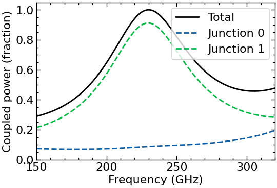
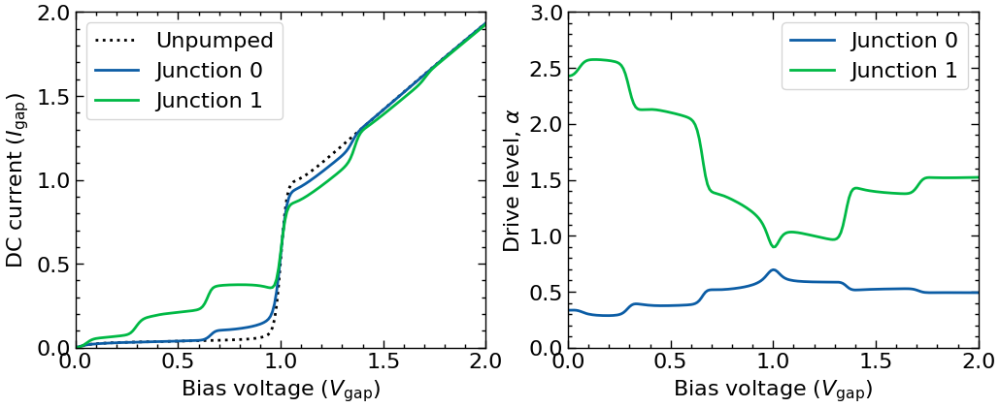
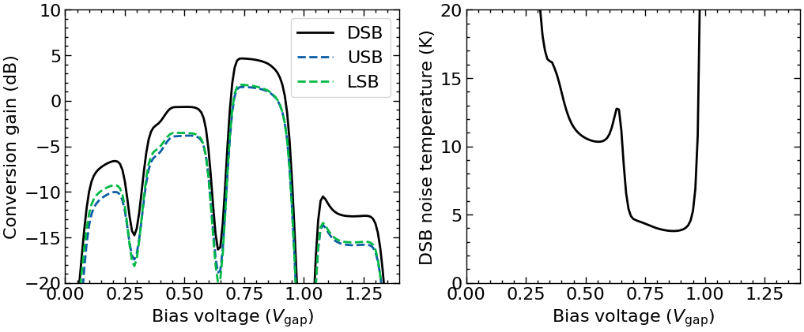
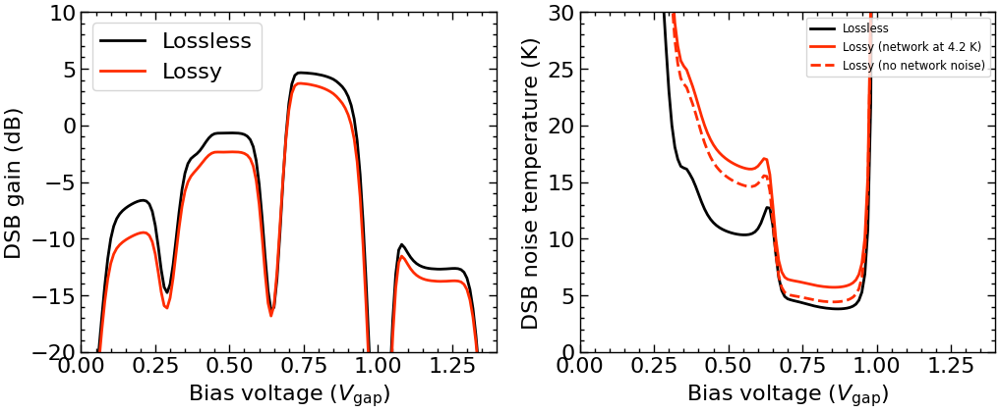
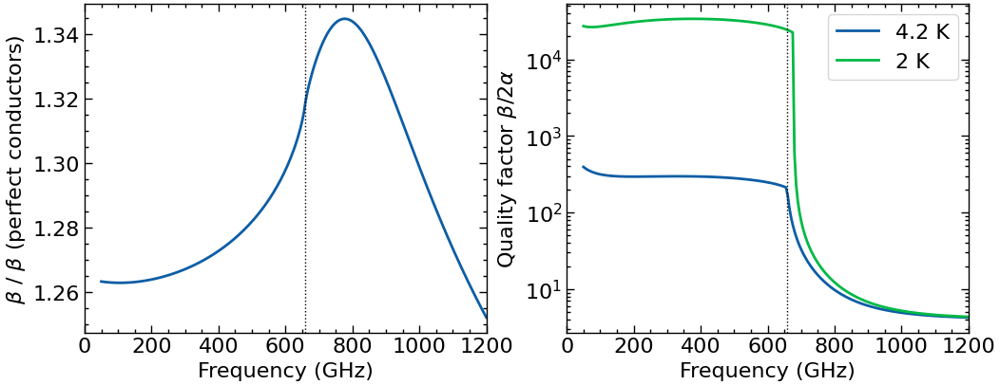
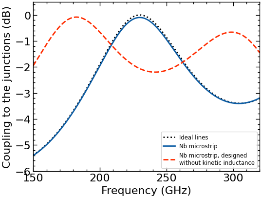

9. Example #6: Multiple junctions
SIS mixers often use more than one junction: e.g., twin-junction tuning circuits, where two junctions are separated by a short inductive line that tunes out their capacitance, or series arrays. QMix can simulate several junctions in one linear embedding network:
qmix.circuit.MultiJunctionCircuitholds the embedding circuit: at each tone and harmonic, a multi-port Thevenin equivalent (a vector of open-circuit voltages and an impedance matrix that couples the junctions);qmix.harmonic_balance.harmonic_balancesolves for the voltages across all junctions together, andqmix.qtcurrent.qtcurrentgives their tunneling currents;qmix.network.set_theveninandqmix.network.impedance_matrixget these from an S-parameter network with one port per junction;the small-signal analysis (
qmix.small_signal) gives the conversion gain and noise temperature of the mixer:admittance_matrixandnoise_matrixgive one matrix per junction, andnetwork_gainandnetwork_output_noisesolve the sideband network, including the thermal noise of a lossy embedding network; andqmix.network.microstrip_lineandqmix.superconductormodel superconducting microstrip tuning circuits (kinetic inductance and loss of the films).
This notebook simulates a twin-junction mixer at 230 GHz. In all arrays, the junction axis comes first and the junctions are numbered from 0 (vt[j, f, p], zt[j, l, f, p], vj[j, f, p, i]), so that vj[j] has the same shape as for one junction.
[1]:
%matplotlib inline
import contextlib
import io
import numpy as np
import matplotlib.pyplot as plt
import scipy.constants as sc
from scipy.optimize import brentq
import qmix
from qmix.circuit import MultiJunctionCircuit
from qmix.harmonic_balance import harmonic_balance
from qmix.network import (impedance_matrix, microstrip, microstrip_line, set_thevenin, tee, thevenin,
transmission_line)
from qmix.qtcurrent import qtcurrent
from qmix.small_signal import (admittance_matrix, noise_matrix, sideband_networks, sideband_impedances,
network_gain, network_output_noise)
from qmix.superconductor import SuperconductingFilm, energy_gap
# https://github.com/garrettj403/SciencePlots
import scienceplots
plt.style.use(['science', 'notebook'])
9.1. The junctions
The junctions use the shape of the measured DC I-V curve from Example #3 (with the same smearing), but here each junction has a normal resistance of 20 \(\Omega\) and a capacitance of 70 fF (\(\omega R_n C \approx 2\) at 230 GHz). All values in the simulation are normalized to one junction’s gap voltage and normal resistance (rn); junctions with different areas can be described with cct.area, which scales their currents (and noise), and each junction can have its own response
function (pass a list as resp).
[2]:
# Response function from the experimental DC I-V curve (Example #3)
def load(name):
return np.genfromtxt('example-data/' + name, delimiter=',', skip_header=1)
with contextlib.redirect_stdout(io.StringIO()):
dciv = qmix.exp.DCData(load('dciv.csv'), load('dcif.csv'), area=1.5, verbose=False)
resp = dciv.resp_smear
VGAP = dciv.vgap # gap voltage, in V
RN = 20. # normal resistance of each junction, in ohms
CAP = 70e-15 # capacitance of each junction, in F
TEMP = 4.2 # physical temperature, in K
print("Gap voltage: {:.3f} mV".format(VGAP * 1e3))
Gap voltage: 2.717 mV
9.2. The twin-junction tuning circuit
The tuning circuit is built from ideal transmission lines with qmix.network (transmission_line and tee; superconducting lines follow below). Junction 0 sits at the end of a quarter-wave transformer from the RF port (a 35 \(\Omega\) source, e.g., a waveguide probe), and junction 1 is connected to junction 0 by a short line (\(Z_c = 8~\Omega\)). The length of this line is chosen so that the admittance at junction 0 is real at 230 GHz: its inductance resonates with the
capacitance of the two junctions. The transformer then matches the remaining (small) resistance to the source.
The junction capacitances are not part of the network: they are added in parallel with the junction ports (cap argument) when the Thevenin equivalent is calculated.
[3]:
F0 = 230e9 # design frequency, in Hz
R_S = 35. # source impedance, in ohms
ZC = 8. # characteristic impedance of the tuning line, in ohms
EPS = 4. # effective permittivity of the lines
def line(freq, zc, length, loss=0.):
"Ideal transmission line (permittivity EPS); loss: attenuation relative to beta."
beta = 2 * np.pi * freq * np.sqrt(EPS) / sc.c
return transmission_line(freq, zc, beta * (loss + 1j), length)
def y_junction(f):
"Admittance of one junction in its normal state (Rn || C)."
return 1 / RN + 2j * np.pi * f * CAP
def y_node(f, length):
"Admittance at junction 0: junction 0 in parallel with the line to junction 1."
beta = 2 * np.pi * f * np.sqrt(EPS) / sc.c
zl, tan = 1 / y_junction(f), np.tan(beta * length)
return y_junction(f) + (ZC + 1j * zl * tan) / (ZC * (zl + 1j * ZC * tan))
# Tuning line: the admittance at junction 0 is real at F0
wavelength = sc.c / np.sqrt(EPS) / F0
length = brentq(lambda l: y_node(F0, l).imag, 1e-3 * wavelength, 0.24 * wavelength)
r_node = 1 / y_node(F0, length).real
z_xfmr = np.sqrt(R_S * r_node) # quarter-wave transformer
print("Tuning line: {:.1f} um ({:.3f} wavelengths)".format(length * 1e6, length / wavelength))
print("Resistance at junction 0: {:.2f} ohms -> transformer: {:.2f} ohms".format(r_node, z_xfmr))
def rf_network(freq, loss=0.):
"RF circuit with ports: 1 = RF input, 2 = junction 0, 3 = junction 1."
net = line(freq, z_xfmr, wavelength / 4, loss).connect(2, tee(freq, z_xfmr), 1) # RF, J0, tee
net = net.connect(3, line(freq, ZC, length, loss), 1) # RF, J0, J1
return net.renormalize(np.array([R_S, z_xfmr, ZC]))
freq_rf = np.linspace(150e9, 320e9, 341)
rf = rf_network(freq_rf)
PORT_RF, PORTS_J = 1, [2, 3]
Tuning line: 92.4 um (0.142 wavelengths)
Resistance at junction 0: 1.76 ohms -> transformer: 7.86 ohms
qmix.network.thevenin with a list of junction ports gives the multi-port Thevenin equivalent: the open-circuit voltages at the junction ports for a source with a given available power at the RF port, and the impedance matrix of the junction ports (with the junction capacitances in parallel). With the junctions in their normal state (\(R_n\)), the power that each of them absorbs follows from \(V_J = (1 + Z_T / R_n)^{-1} V_T\). Most of the power goes into junction 1, at the end of the
tuning line.
[4]:
power = 1e-9 # available power, in W (any value: the coupling is linear here)
vt, zt = thevenin(rf, freq_rf, PORTS_J, PORT_RF, power=power, cap=CAP)
vj_normal = np.linalg.solve(np.eye(2) + zt / RN, vt[..., None])[..., 0]
coupling = np.abs(vj_normal) ** 2 / (2 * RN) / power
fig, ax = plt.subplots(figsize=(6, 4))
ax.plot(freq_rf / 1e9, coupling.sum(axis=1), 'k', label='Total')
ax.plot(freq_rf / 1e9, coupling[:, 0], 'C0--', label='Junction 0')
ax.plot(freq_rf / 1e9, coupling[:, 1], 'C1--', label='Junction 1')
ax.set(xlabel='Frequency (GHz)', ylabel='Coupled power (fraction)', xlim=[150, 320], ylim=[0, 1.05])
ax.legend(frameon=True)
plt.show()

9.3. Pumping the junctions with the LO
set_thevenin puts the Thevenin equivalent into a MultiJunctionCircuit (normalized), here for an LO at 230 GHz with an available power of 60 nW at the RF port. harmonic_balance then solves for the voltages across both junctions. Each junction is voltage biased: cct.vb[j] is the DC bias voltage of junction j (assigning a 1-D array, as here, biases both junctions at the same voltage).
[5]:
P_LO = 60e-9 # LO power, in W
cct = MultiJunctionCircuit(2, 1, 1, vb_min=0, vb_max=2, vb_npts=201, vgap=VGAP, rn=RN)
cct.freq[1] = F0 / cct.fgap
set_thevenin(cct, rf, f=1, p=1, port=PORTS_J, source_port=PORT_RF, power=P_LO, cap=CAP)
print("Thevenin voltages:\n", cct.vt[:, 1, 1].round(3))
print("Thevenin impedance matrix:\n", cct.zt[:, :, 1, 1].round(3))
vj = harmonic_balance(cct, resp, num_b=15, stop_rerror=1e-8, max_it=50, verbose=False)
idc = qtcurrent(vj, cct, resp, 0., verbose=False) # DC current of each junction, idc[j, i]
Thevenin voltages:
[-0. -0.j -1.194-0.j]
Thevenin impedance matrix:
[[0. -0.j 0. -0.311j]
[0. -0.311j 1.097+0.j ]]
The off-diagonal impedance couples the junctions. In the Thevenin equivalent, junction 1 is replaced by its capacitance alone, which resonates with the tuning line: this shorts the node of junction 0, so its open-circuit voltage and its own impedance are (nearly) zero. Junction 0 is only pumped through its coupling to junction 1.
The two junctions are pumped differently: junction 1 has a higher drive level (\(\alpha = |V_{J}| / V_{ph}\)), and its photon steps are more pronounced.
[6]:
vb = cct.vb[0]
vph = cct.freq[1]
fig, (ax1, ax2) = plt.subplots(1, 2, figsize=(12, 4.5))
ax1.plot(vb, resp.idc(vb), 'k:', label='Unpumped')
for j in range(2):
ax1.plot(vb, idc[j], 'C{}'.format(j), label='Junction {}'.format(j))
ax1.set(xlabel=r'Bias voltage ($V_\mathrm{gap}$)', ylabel=r'DC current ($I_\mathrm{gap}$)', xlim=[0, 2], ylim=[0, 2])
ax1.legend(frameon=True)
for j in range(2):
ax2.plot(vb, np.abs(vj[j, 1, 1]) / vph, 'C{}'.format(j), label='Junction {}'.format(j))
ax2.set(xlabel=r'Bias voltage ($V_\mathrm{gap}$)', ylabel=r'Drive level, $\alpha$', xlim=[0, 2], ylim=[0, 3])
ax2.legend(frameon=True)
plt.show()

9.4. Small-signal analysis: gain and noise
For the small-signal analysis (Tucker theory), the junctions are coupled by the embedding network at every sideband (the IF, USB and LSB here). admittance_matrix and noise_matrix give the conversion admittance matrix and the current noise correlation matrix of each junction (y[j, m, n, i] for sidebands \(m, n\)), and the network at each sideband is described by its impedance matrix over the junction ports and one external port: the RF port at the USB and LSB, and the IF port at
the IF. qmix.network.impedance_matrix gives this from the S-parameters (with the junction capacitances), and sideband_networks collects them in the order used by qmix.small_signal (complex conjugates at the LSB). z_ext holds the impedances that terminate the external ports: the source impedance at the RF sidebands and the IF load at the IF.
At the IF (5 GHz), the tuning line is electrically short, so the junctions are connected in parallel to a 50 \(\Omega\) IF load. The IF circuit is a tee with the IF port, junction 0, and the tuning line to junction 1.
[7]:
F_IF = 5e9 # IF frequency, in Hz
R_IF = 50. # IF load, in ohms
freq_if = np.linspace(1e9, 20e9, 39)
if_circuit = tee(freq_if, R_IF).connect(3, line(freq_if, ZC, length), 1) # ports: IF, J0, J1
PORT_IF = 1
f_lo, f_if = cct.freq[1], F_IF / cct.fgap
y = admittance_matrix(vj, cct, resp, f_if, num_sb=1, num_b=15)
h = noise_matrix(vj, cct, resp, f_if, TEMP, num_sb=1, num_b=15)
print("Admittance matrices:", y.shape, "(junction, sideband, sideband, bias voltage)")
# Embedding networks: junction ports + the external port, normalized to Rn
caps = [CAP, CAP, 0.]
z_usb = impedance_matrix(rf, F0 + F_IF, PORTS_J + [PORT_RF], cap=caps) / RN
z_lsb = impedance_matrix(rf, F0 - F_IF, PORTS_J + [PORT_RF], cap=caps) / RN
z_if = impedance_matrix(if_circuit, F_IF, PORTS_J + [PORT_IF], cap=caps) / RN
z_net = sideband_networks(z_if, z_usb, z_lsb)
z_ext = sideband_impedances(R_IF / RN, R_S / RN, R_S / RN)
Admittance matrices: (2, 3, 3, 201) (junction, sideband, sideband, bias voltage)
network_gain gives the transducer gain from the source at an RF sideband to the IF load, and network_output_noise the noise delivered to the IF load (as a temperature). The noise sources are the shot noise of the junctions (uncorrelated between the junctions), the embedding network (temp; a lossless network has no noise of its own) and the terminations of the external ports (temp_ext), all with Callen-Welton temperatures. For the double-sideband (DSB) noise temperature of the
mixer, the noise of both RF inputs and of the IF load is excluded, and the output noise is divided by the sum of the USB and LSB gains.
[8]:
g_usb = network_gain(y, z_net, z_ext, 1)
g_lsb = network_gain(y, z_net, z_ext, -1)
g_dsb = g_usb + g_lsb
t_out = network_output_noise(y, h, z_net, z_ext, VGAP, f_lo, f_if, temp=TEMP, temp_ext=TEMP, exclude=[-1, 0, 1])
tn_dsb = t_out / g_dsb
best = np.argmax(g_dsb)
print("Best bias: {:.3f} Vgap ({:.2f} mV)".format(vb[best], vb[best] * VGAP * 1e3))
print("DSB gain: {:.2f} dB (USB {:.2f} dB, LSB {:.2f} dB)".format(
10 * np.log10(g_dsb[best]), 10 * np.log10(g_usb[best]), 10 * np.log10(g_lsb[best])))
print("DSB noise temperature: {:.1f} K".format(tn_dsb[best]))
fig, (ax1, ax2) = plt.subplots(1, 2, figsize=(12, 4.5))
ax1.plot(vb, 10 * np.log10(g_dsb), 'k', label='DSB')
ax1.plot(vb, 10 * np.log10(g_usb), 'C0--', label='USB')
ax1.plot(vb, 10 * np.log10(g_lsb), 'C1--', label='LSB')
ax1.set(xlabel=r'Bias voltage ($V_\mathrm{gap}$)', ylabel='Conversion gain (dB)', xlim=[0, 1.4], ylim=[-20, 10])
ax1.legend(frameon=True)
ax2.plot(vb, tn_dsb, 'k')
ax2.set(xlabel=r'Bias voltage ($V_\mathrm{gap}$)', ylabel='DSB noise temperature (K)', xlim=[0, 1.4], ylim=[0, 20])
plt.show()
Best bias: 0.740 Vgap (2.01 mV)
DSB gain: 4.65 dB (USB 1.51 dB, LSB 1.76 dB)
DSB noise temperature: 4.4 K

This is the noise added by the mixer itself (with the noise of the RF inputs and of the IF load excluded). Since the tuning circuit is lossless, it is the shot noise of the junctions, coupled to the IF through the network. The receiver noise would also include the noise of the optics and of the IF amplifier.
9.5. Check: multi-tone simulation
The small-signal analysis assumes that the RF signal is weak. It can be checked with a multi-tone harmonic balance of both junctions with four tones (LO, USB, LSB and IF), a weak RF signal at the USB, and the IF load. set_thevenin without a source_port gives the Thevenin impedance matrix for the tones without a source (the LSB and the IF). The power in the IF load follows from the junction currents at the IF, \(I_L = \sum_j Z_{x j} I_j / (Z_{xx} + R_\mathrm{IF})\), where \(x\) is
the IF port.
Note that at a low IF, the RF signal has to be very weak: the drive level of the IF tone, \(|V_\mathrm{IF}| / V_\mathrm{ph,IF}\), is large even for a small IF voltage, since the IF photon voltage is small (0.007 \(V_\mathrm{gap}\) here). With 1 pW instead of 0.1 fW, the multi-tone gain differs from the small-signal gain by ~0.5%.
[9]:
P_RF = 1e-16 # RF power, in W
vb_check = np.linspace(0.6, 1.0, 9)
cct4 = MultiJunctionCircuit(2, 4, 1, vb_npts=vb_check.size, vgap=VGAP, rn=RN)
cct4.vb = vb_check
cct4.freq[1:] = np.array([F0, F0 + F_IF, F0 - F_IF, F_IF]) / cct4.fgap
set_thevenin(cct4, rf, f=1, port=PORTS_J, source_port=PORT_RF, power=P_LO, cap=CAP) # LO
set_thevenin(cct4, rf, f=2, port=PORTS_J, source_port=PORT_RF, power=P_RF, cap=CAP) # USB
set_thevenin(cct4, rf, f=3, port=PORTS_J, cap=CAP) # LSB
set_thevenin(cct4, if_circuit, f=4, port=PORTS_J, cap=CAP) # IF
num_b = (15, 3, 3, 3)
vj4 = harmonic_balance(cct4, resp, num_b, stop_rerror=1e-8, max_it=50, verbose=False, warm_start=True)
i_if = qtcurrent(vj4, cct4, resp, cct4.freq[4], num_b, verbose=False) * cct4.igap # in A
z_if_ohm = impedance_matrix(if_circuit, F_IF, PORTS_J + [PORT_IF], cap=caps)
i_load = z_if_ohm[2, :2] @ i_if / (z_if_ohm[2, 2] + R_IF)
g_usb_multitone = 0.5 * np.abs(i_load) ** 2 * R_IF / P_RF
g_usb_small_signal = np.interp(vb_check, vb, g_usb)
print("Bias Small-signal Multi-tone Rel. difference")
for v, g1, g2 in zip(vb_check, g_usb_small_signal, g_usb_multitone):
print("{:.3f} {:10.6f} {:10.6f} {:9.1e}".format(v, g1, g2, g2 / g1 - 1))
Bias Small-signal Multi-tone Rel. difference
0.600 0.151595 0.151596 4.3e-06
0.650 0.013690 0.013690 4.0e-05
0.700 0.756183 0.756182 -9.1e-07
0.750 1.414936 1.414932 -2.4e-06
0.800 1.378269 1.378265 -2.8e-06
0.850 1.258928 1.258924 -3.2e-06
0.900 0.892706 0.892702 -3.4e-06
0.950 0.069976 0.069976 8.6e-06
1.000 0.000074 0.000074 6.2e-04
The two agree to a few parts in 1e6 where the gain is large (the remaining difference is the effect of the finite RF signal and of the truncated sums), and the relative difference only grows where the gain is small. The small-signal analysis is much faster: it needs the harmonic balance of the LO alone, and it gives the gain and noise at any IF without frequency rounding.
9.6. A lossy tuning circuit
The embedding network can also be lossy. A passive network at a physical temperature \(T\) has open-circuit noise voltages with the correlation matrix \(2 k T_\mathrm{CW} (Z + Z^\dagger)\) per unit bandwidth (Twiss’ theorem, with the Callen-Welton temperature \(T_\mathrm{CW}\)), which network_output_noise includes when temp is given. Here, the lines have an attenuation of 2% of their propagation constant (e.g., a normal-metal tuning circuit). The loss reduces the gain and
adds the thermal noise of the network (the difference between the solid and the dashed red lines). Even without the network’s own noise, the noise temperature is higher, since the noise of the junctions is referred to the input through a lower gain. At 230 GHz, the Callen-Welton temperature of the network at 4.2 K is ~6.4 K, i.e., its zero-point fluctuations are a large part of its noise.
[10]:
def mixer(network, temp):
"DSB gain and noise temperature of the mixer with this RF network (same LO power and bias)."
c = MultiJunctionCircuit(2, 1, 1, vb_min=0, vb_max=2, vb_npts=201, vgap=VGAP, rn=RN)
c.freq[1] = F0 / c.fgap
set_thevenin(c, network, port=PORTS_J, source_port=PORT_RF, power=P_LO, cap=CAP)
v = harmonic_balance(c, resp, num_b=15, stop_rerror=1e-8, max_it=50, verbose=False)
y_ = admittance_matrix(v, c, resp, f_if, num_sb=1, num_b=15)
h_ = noise_matrix(v, c, resp, f_if, TEMP, num_sb=1, num_b=15)
z_net_ = sideband_networks(z_if, impedance_matrix(network, F0 + F_IF, PORTS_J + [PORT_RF], cap=caps) / RN,
impedance_matrix(network, F0 - F_IF, PORTS_J + [PORT_RF], cap=caps) / RN)
g = network_gain(y_, z_net_, z_ext, 1) + network_gain(y_, z_net_, z_ext, -1)
t = network_output_noise(y_, h_, z_net_, z_ext, VGAP, f_lo, f_if, temp=temp, temp_ext=TEMP, exclude=[-1, 0, 1])
return g, t / g
lossy = rf_network(freq_rf, loss=0.02)
g_lossy, tn_lossy = mixer(lossy, TEMP)
_, tn_lossy_no_network_noise = mixer(lossy, None)
fig, (ax1, ax2) = plt.subplots(1, 2, figsize=(12, 4.5))
ax1.plot(vb, 10 * np.log10(g_dsb), 'k', label='Lossless')
ax1.plot(vb, 10 * np.log10(g_lossy), 'C3', label='Lossy')
ax1.set(xlabel=r'Bias voltage ($V_\mathrm{gap}$)', ylabel='DSB gain (dB)', xlim=[0, 1.4], ylim=[-20, 10])
ax1.legend(frameon=True)
ax2.plot(vb, tn_dsb, 'k', label='Lossless')
ax2.plot(vb, tn_lossy, 'C3', label='Lossy (network at 4.2 K)')
ax2.plot(vb, tn_lossy_no_network_noise, 'C3--', label='Lossy (no network noise)')
ax2.set(xlabel=r'Bias voltage ($V_\mathrm{gap}$)', ylabel='DSB noise temperature (K)', xlim=[0, 1.4], ylim=[0, 30])
ax2.legend(frameon=True, loc='upper right', fontsize='small')
plt.show()
i = np.argmax(g_lossy)
print("Lossy circuit at {:.3f} Vgap: DSB gain {:.2f} dB, noise {:.1f} K ({:.1f} K without the network's noise)".format(
vb[i], 10 * np.log10(g_lossy[i]), tn_lossy[i], tn_lossy_no_network_noise[i]))

Lossy circuit at 0.740 Vgap: DSB gain 3.70 dB, noise 6.2 K (4.9 K without the network's noise)
9.7. A superconducting tuning circuit
Real tuning circuits are made from superconducting microstrip, e.g., Nb strips on a thin SiO\(_2\) dielectric above a Nb ground plane. Below the gap frequency of the films, the films have almost no loss, but the supercurrent stores kinetic energy: the penetration depth \(\lambda\) (~80 nm for Nb films) adds a kinetic inductance to the line, which slows the waves down. For a thin dielectric (\(h \sim 3 \lambda\)) this is a large effect. Above the gap frequency, photons break Cooper pairs and the films become lossy.
qmix.superconductor.SuperconductingFilm gives the surface impedance of a film from the Mattis-Bardeen theory (gap voltage, critical temperature, normal-state resistivity and thickness), and qmix.network.microstrip gives the characteristic impedance \(Z_c\) and propagation constant \(\gamma = \alpha + j \beta\) of a microstrip line with these films (the same model as SuperMix; see the Theory section). Here, the line is 6 \(\mu\)m wide on 250 nm of SiO\(_2\): its phase
constant \(\beta\) is ~26% larger than with perfect conductors (the waves are ~21% slower), and its quality factor drops from ~300 at 4.2 K (thermally excited quasiparticles; ~3 \(\times 10^4\) at 2 K) to ~10 above the gap frequency (dotted line: \(2 \Delta(T) / h\) at 4.2 K).
[11]:
NB = SuperconductingFilm(vgap=2.8e-3, tc=9.2, rho_n=5e-8, thickness=300e-9) # Nb: 2.8 mV, 9.2 K, 5 uOhm cm, 300 nm
H_DIEL, EPS_DIEL = 250e-9, 3.8 # SiO2 dielectric
W_LINE = 6e-6
freq_ms = np.linspace(50e9, 1200e9, 231)
zc_nb, gamma_nb = microstrip(freq_ms, W_LINE, H_DIEL, EPS_DIEL, strip=NB, ground=NB, temp=TEMP)
zc_pec, gamma_pec = microstrip(freq_ms, W_LINE, H_DIEL, EPS_DIEL, thickness=NB.thickness) # perfect conductors
_, gamma_2k = microstrip(freq_ms, W_LINE, H_DIEL, EPS_DIEL, strip=NB, ground=NB, temp=2.)
f_gap = NB.fgap * energy_gap(TEMP, NB.tc) # 2 Delta(T) / h
print("Gap frequency of the films: {:.0f} GHz at 0 K, {:.0f} GHz at {} K".format(NB.fgap / 1e9, f_gap / 1e9, TEMP))
print("Penetration depth: {:.0f} nm".format(NB.penetration_depth(TEMP) * 1e9))
z0, b0 = microstrip(F0, W_LINE, H_DIEL, EPS_DIEL, strip=NB, ground=NB, temp=TEMP)
z1, b1 = microstrip(F0, W_LINE, H_DIEL, EPS_DIEL, thickness=NB.thickness)
print("At 230 GHz: Zc = {:.2f} ohms (perfect conductors: {:.2f}), beta / beta(perfect conductors) = {:.3f}".format(
z0.real, z1.real, b0.imag / b1.imag))
fig, (ax1, ax2) = plt.subplots(1, 2, figsize=(12, 4.5))
ax1.plot(freq_ms / 1e9, gamma_nb.imag / gamma_pec.imag, 'C0')
ax1.set(xlabel='Frequency (GHz)', ylabel=r'$\beta$ / $\beta$ (perfect conductors)', xlim=[0, 1200])
ax2.semilogy(freq_ms / 1e9, gamma_nb.imag / (2 * gamma_nb.real), 'C0', label='{} K'.format(TEMP))
ax2.semilogy(freq_ms / 1e9, gamma_2k.imag / (2 * gamma_2k.real), 'C1', label='2 K')
ax2.set(xlabel='Frequency (GHz)', ylabel=r'Quality factor $\beta / 2 \alpha$', xlim=[0, 1200])
ax2.legend(frameon=True)
for ax in (ax1, ax2):
ax.axvline(f_gap / 1e9, c='k', ls=':', lw=1)
plt.show()
Gap frequency of the films: 677 GHz at 0 K, 658 GHz at 4.2 K
Penetration depth: 80 nm
At 230 GHz: Zc = 9.05 ohms (perfect conductors: 7.16), beta / beta(perfect conductors) = 1.265

The tuning circuit is designed as above, but with Nb microstrip: the widths are chosen for the same characteristic impedances at 230 GHz, the length of the tuning line for a real admittance at junction 0, and the transformer is a quarter wavelength long. microstrip_line gives the S-parameters of each line, which are connected as before.
If the kinetic inductance is ignored in the design (perfect conductors), the lines come out ~27% too long, and the circuit resonates at ~180 GHz instead of 230 GHz (red dashed line). With the kinetic inductance, the Nb circuit (blue) is almost the same as the ideal one.
[12]:
def width_for(zc_target, **kw):
"Strip width with the characteristic impedance zc_target at F0."
return brentq(lambda w: microstrip(F0, w, H_DIEL, EPS_DIEL, **kw)[0].real - zc_target, 0.5e-6, 100e-6)
def design(**kw):
"Tuning line and quarter-wave transformer from microstrip (kw: films, or the strip thickness)."
w_tune = width_for(ZC, **kw)
zc, gamma = microstrip(F0, w_tune, H_DIEL, EPS_DIEL, **kw)
zl = 1 / y_junction(F0)
def y_node_ms(length): # junction 0 in parallel with the (lossy) line to junction 1
tanh = np.tanh(gamma * length)
return y_junction(F0) + (zc + zl * tanh) / (zc * (zl + zc * tanh))
wl = 2 * np.pi / gamma.imag
l_tune = brentq(lambda l: y_node_ms(l).imag, 1e-3 * wl, 0.24 * wl)
z_x = np.sqrt(R_S / y_node_ms(l_tune).real)
w_x = width_for(z_x, **kw)
l_x = np.pi / 2 / microstrip(F0, w_x, H_DIEL, EPS_DIEL, **kw)[1].imag
return dict(w_tune=w_tune, l_tune=l_tune, z_x=z_x, w_x=w_x, l_x=l_x)
def nb_network(freq, d):
"RF circuit from Nb microstrip with the dimensions d (ports: 1 = RF input, 2 = junction 0, 3 = junction 1)."
kw = dict(strip=NB, ground=NB, temp=TEMP)
net = microstrip_line(freq, d['l_x'], d['w_x'], H_DIEL, EPS_DIEL, **kw).connect(2, tee(freq, d['z_x']), 1)
net = net.connect(3, microstrip_line(freq, d['l_tune'], d['w_tune'], H_DIEL, EPS_DIEL, **kw), 1)
return net.renormalize(np.array([R_S, d['z_x'], ZC]))
nb_design = design(strip=NB, ground=NB, temp=TEMP)
naive_design = design(thickness=NB.thickness)
for name, d in (('Nb films', nb_design), ('perfect conductors', naive_design)):
print("Designed with {}: tuning line {:.2f} x {:.1f} um, transformer ({:.2f} ohms) {:.2f} x {:.1f} um".format(
name, d['w_tune'] * 1e6, d['l_tune'] * 1e6, d['z_x'], d['w_x'] * 1e6, d['l_x'] * 1e6))
rf_nb = nb_network(freq_rf, nb_design)
rf_naive = nb_network(freq_rf, naive_design)
fig, ax = plt.subplots(figsize=(6, 4.5))
for net, label, style in ((rf, 'Ideal lines', 'k:'), (rf_nb, 'Nb microstrip', 'C0'),
(rf_naive, 'Nb microstrip, designed\nwithout kinetic inductance', 'C3--')):
vt_, zt_ = thevenin(net, freq_rf, PORTS_J, PORT_RF, power=power, cap=CAP)
vj_ = np.linalg.solve(np.eye(2) + zt_ / RN, vt_[..., None])[..., 0]
ax.plot(freq_rf / 1e9, 10 * np.log10((np.abs(vj_) ** 2).sum(axis=-1) / (2 * RN) / power), style, label=label)
ax.set(xlabel='Frequency (GHz)', ylabel='Coupling to the junctions (dB)', xlim=[150, 320], ylim=[-6, 0.5])
ax.legend(frameon=True, fontsize='small', loc='lower right')
plt.show()
Designed with Nb films: tuning line 6.89 x 78.0 um, transformer (7.90 ohms) 6.99 x 137.3 um
Designed with perfect conductors: tuning line 5.30 x 99.4 um, transformer (7.86 ohms) 5.41 x 175.3 um

The mixer with the Nb tuning circuit, with the same LO power and bias as above. The films are slightly lossy at 4.2 K, so the gain is a little lower and the circuit adds a little thermal noise.
[13]:
g_nb, tn_nb = mixer(rf_nb, TEMP)
_, tn_nb_no_network_noise = mixer(rf_nb, None)
for label, g, tn in (('Ideal lines', g_dsb, tn_dsb), ('Nb microstrip', g_nb, tn_nb)):
i = np.argmax(g)
print("{:14s} at {:.3f} Vgap: DSB gain {:.2f} dB, noise {:.2f} K".format(label, vb[i], 10 * np.log10(g[i]), tn[i]))
i = np.argmax(g_nb)
print("(Nb microstrip without the noise of the films: {:.2f} K)".format(tn_nb_no_network_noise[i]))
Ideal lines at 0.740 Vgap: DSB gain 4.65 dB, noise 4.41 K
Nb microstrip at 0.740 Vgap: DSB gain 4.55 dB, noise 4.56 K
(Nb microstrip without the noise of the films: 4.43 K)
9.8. Summary
MultiJunctionCircuit(num_j, num_f, num_p): multi-port Thevenin equivalent at each tone and harmonic (vt[j, f, p],zt[j, l, f, p]), bias voltage per junction (vb[j, i]), relative areas (area).harmonic_balanceandqtcurrent: as for one junction, with the junction axis first (vj[j, f, p, i]);respcan be a list (one per junction).qmix.network:thevenin/set_theveninwith a list of junction ports, andimpedance_matrixfor the embedding networks of the small-signal analysis.qmix.network.microstrip/microstrip_linewithqmix.superconductor.SuperconductingFilm: superconducting (or normal metal) microstrip lines;transmission_lineandteefor ideal circuits.qmix.small_signal:admittance_matrixandnoise_matrix(one per junction),sideband_networks,network_gain,network_output_noiseandnetwork_noise_temperature. These also work for one junction behind a lossy network.
All junctions share one gap voltage and normal resistance (junctions of the same materials), and each junction is voltage biased.